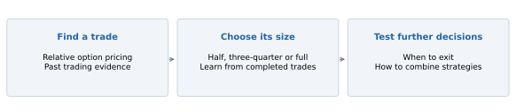
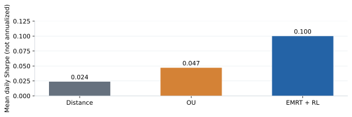
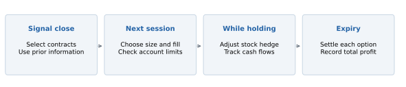
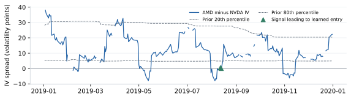
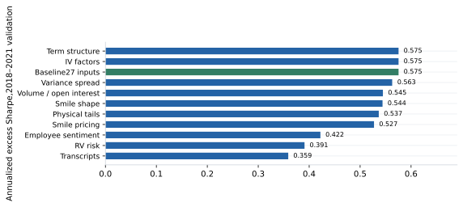
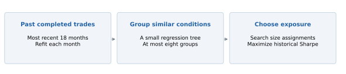
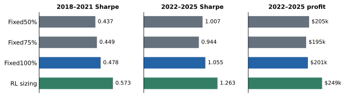
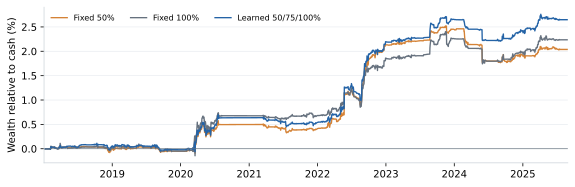
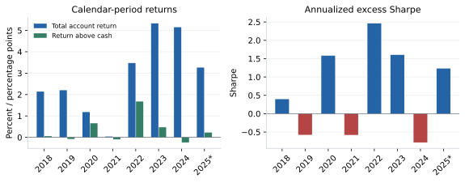
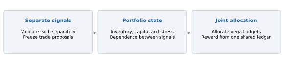

Adam Kreitzman and Soo Xin Yang | MFE230Z | 6 October 2026
Pairs trading starts with a simple idea: two related securities can become unusually expensive or cheap relative to each other. We apply that idea to options, where the price of uncertainty can differ across related stocks. We first search for a trading signal and then ask whether a learning algorithm can improve the amount of risk taken on each trade. We study approximately 30-day, 25-delta out-of-the-money puts. We select a sizing configuration using 2018–2021 validation and evaluate it over January 2022–August 2025. In a simulated $10 million account, the screened learner achieves an annualized excess Sharpe ratio of 1.263, versus 1.055 for constant full exposure. Learned sizing raises Sharpe by about 20% over full sizing in both validation and evaluation.
Suppose AMD and NVDA are exposed to similar news, but AMD options suddenly become much more expensive relative to NVDA options than they usually are. An investor could sell AMD options and buy NVDA options, hoping that the difference is excessive. The trade concerns the prices of the options and the subsequent stock movements. It does not require a forecast that AMD shares will fall or NVDA shares will rise.
This distinction matters because an option is affected by both the direction and the size of stock-price moves. We use stock positions to offset the options’ immediate sensitivity to direction. We also match their initial sensitivity to changes in implied volatility. The resulting position is designed to compare volatility across two names, although it still carries risk when their prices, volatility or hedge requirements evolve differently.

Our question has two parts. First, can observable differences in option pricing identify useful trades after execution and hedging costs? Second, given those trades, can an algorithm decide when to take more or less exposure? Keeping these questions separate helps us understand where an improvement comes from. A stronger signal and a better sizing policy are different contributions.
We build on Ning and Lee’s study of reinforcement learning for equity pairs [1]. Their paper supplies the starting idea of learning how to trade a relative-price signal. Our extension changes the instrument, the accounting and the decision being learned. The following pages explain the option trade before describing that connection, our experiments and the evidence for adaptive sizing.
A put gives its buyer the right to sell stock at a specified price, called the strike, until the option expires. A put with a strike below the current stock price is out of the money. Our retained strategy selects these puts near 25 delta and approximately 30 days to expiry. “25 delta” means that a small $1 rise in the stock would initially lower the put’s value by about $0.25 per share. It is a measure of price sensitivity, rather than an exact probability of exercise [2].
Implied volatility (IV) is the volatility input that makes an option-pricing model reproduce a quoted option price. A higher IV generally means a more expensive option, holding other inputs fixed. Realized volatility (RV) describes how much the stock actually moved over a period. Selling an option can be attractive when its price more than compensates for those future movements; buying can be attractive in the opposite situation. Future RV is unknown at entry, so any estimate must use information already available.
Vega measures how much an option’s value changes when IV rises by one percentage point—for example, from 30% to 31% [3]. Consider the illustrative positions below. The table reports total position vega; each option contract represents 100 shares. These are explanatory numbers, not an observed trade.
| Position | Option contracts | Total vega per vol point | Initial stock hedge |
|---|---|---|---|
| Buy A puts | +100 | +$450 | Buy 2,500 shares |
| Sell B puts | −150 | −$450 | Short 3,750 shares |
Each A contract has $4.50 of vega and each B contract has $3.00. Buying 100 A contracts and selling 150 B contracts therefore balances +$450 against −$450. A common one-point IV increase would approximately cancel at entry. Both puts initially have delta −0.25 per share: the long puts require buying stock, while the short puts require selling it. We adjust these stock hedges daily as delta changes. Equal contract counts would generally fail to balance vega.
If A’s IV instead rises by two points while B’s rises by one, the initial vega approximation gives a $900 gain on A and a $450 loss on B: a $450 net gain before other effects. The hedge removes an equal common IV move, while preserving exposure to the difference. This approximation describes a small change in option marks. It is not a formula for the profit earned by holding the pair to expiry.
After delta hedging, option returns still depend on the stock’s path. Gamma describes how delta changes as the stock moves. Hedging a long put buys more stock after declines and sells after rises; the short holder does the opposite. The long option’s gains from movement must compensate for time decay and costs. Changes in IV also affect the interim value [4]. If held to expiry, each leg’s result comes from its purchase or sale price, terminal payoff, stock hedges and costs.
Our actual-contract backtest records these cash flows. It does not replace them with “realized volatility minus implied volatility.” Initial vega neutrality also does not make the position riskless: the two legs can have different gamma, react differently to market stress, and drift apart as time passes. We match vega when entering; we do not continuously rebalance it.
Ning and Lee [1] study stock-price pairs. They form a spread by subtracting a weighted price of one stock from the other, then trade deviations from its usual level. If a spread that has risen unusually far tends to fall back, selling it can profit from mean reversion. Their empirical mean-reversion time measures how long historical departures from the mean took to reverse. They choose spread weights partly to shorten that time.
The trading decision is handled with Q-learning. The state summarizes recent spread movements; the action changes the trading position. A Q-value estimates the reward from an action together with the value of subsequent decisions. That continuation value is what makes the problem sequential: holding a position today changes what can be earned or done tomorrow. The learner trains on simulated mean-reverting spreads before being applied to observed stock prices.

The paper forms ten equity pairs using 2022 data and evaluates trading in 2023. Its combined method performs better on its reported daily Sharpe measure than the two comparison methods. However, it changes both the spread construction and the trading policy. The result supports that combination, but cannot tell us how much improvement came from Q-learning alone. A comparison using identical spreads and changing only the trading policy would answer that narrower question.
The reward used in training also depends on a known long-run mean. That mean is available in the synthetic model, whereas a real spread’s equilibrium can shift after changes in business conditions. Rapid historical reversion need not imply profitable future reversion. One test year leaves this transfer especially difficult to judge, and correlated pairs should not be treated as independent evidence.
We carry forward the separation between finding a spread and learning how to trade it. We change the target from stock-price convergence to the recorded profit of a delta-hedged option position. Our main learner chooses entry size; it does not use a Q-table or learn a sequence of exits. We later test a closer Q-learning adaptation for position management. These are distinct experiments, and a successful sizing result does not establish that the paper’s original algorithm transfers to options.
We obtain historical option quotes and underlying-stock data through WRDS, together with rates and dividends needed for accounting. Early research used interpolated at-the-money IV: a convenient summary of option prices near the stock price. It does not necessarily identify a contract we could buy. The reported strategy instead selects actual puts with their own strikes, expiry dates, quotes and hedge sensitivities. We fit IV and hedge sensitivities using Black–Scholes, a transparent pricing approximation whose European exercise assumption is a limitation for American equity options.
The research roster contains 345 candidate pairs. Available contracts narrow the prepared 25-delta panel to 125 pairs, 161 assets and 36,327 dated candidate observations. The screened strategy has 608 proposals over 2018–2025, including 312 in the 2022–2025 evaluation; 31 pairs trade in that later period. These numbers describe successive stages, rather than 345 continuously tradable pairs. Missing or unusable quotes matter, especially when comparing different parts of the option curve.

At a session’s close, we select options near the target delta and expiry and calculate the signal using information through that date. A qualified proposal fixes which contract to buy and which to sell. Execution takes place in the next session using those contract identities. The chosen vega budget determines integer contract counts, with an initial vega mismatch of no more than 10%. Quote checks and account limits can reject an order.
Once entered, the stock hedge is adjusted daily. The retained strategy holds each option to its own expiry, except for audited corporate-event exits. The simulator tracks option and stock cash flows, dividends, cash interest and borrowing in one account. Stock hedges are netted when multiple trades use the same name. This shared ledger matters: overlapping trades consume capital and can affect whether a later proposal is admitted.
Option fills use the quoted midpoint with an adverse penalty equivalent to 0.10 IV percentage point on each leg. This is a volatility unit, not ten cents or 10% of the option price. Evaluation also charges $0.03 per contract and one basis point of stock-hedge turnover. Training outcomes retain a higher $0.65 commission. The assumed fills are not verified live executions.
Cash earns the benchmark rate; negative cash incurs that rate plus 1%, and short stock has a 0.3% annual borrow charge. Entry checks impose a 5% stress limit, an 80% reserve limit and a gross stock-hedge limit of twice account equity. Stress estimates losses under large moves; reserves approximate committed capital. The same limits apply to a $1 million reference budget per pair and per “wing” (option type and delta bucket; here, 25-delta puts). These are inherited research assumptions, not broker margin requirements. Early assignment, market impact and forced liquidation are not fully modeled. We use the same $10 million account and limits for the main sizing comparisons.
The early ATM proxy results gave us reason to investigate further, but they weakened when we simulated actual contracts. Strike-specific payoffs, daily hedge errors and costs were absent from the simple IV-versus-future-RV proxy. We then investigated maturity, location on the option curve and additional predictors. Roughly 30-day, 25-delta puts were the most useful retained configuration. We found this configuration through research; it was not a choice made before seeing the results.
For each pair, we compare the IV difference with its preceding 252 trading sessions. A current difference in the lowest or highest fifth of that history can propose a trade. At the high extreme, the rule buys the put on the relatively low-IV name and sells the richer name’s put. Historical ranking matters because related companies can have persistently different volatility. An IV difference of ten points means something different for a pair usually five points apart than for a pair usually fifteen points apart.

Figure 4 illustrates the observable spread and its changing historical boundaries. Each day’s series uses the contract selected for that day. It is therefore a signal series, not the mark of one option held throughout the year. After an entry, the backtest follows the purchased and sold contracts without replacing them as the daily selection changes.
We require a return beta between 0.85 and 1.15 and return correlation of at least 0.5. Beta measures the scale of one name’s return response to the other; correlation measures how consistently they move together. Neither guarantees that their option prices will behave alike. These screens keep the comparison among reasonably related names without treating relatedness as the trading signal itself.
The retained strategy also requires positive historical profitability for the proposed trade direction over the preceding 91 and 365 days, with at least 21 and 63 completed observations, respectively. This memory uses simulated prior candidate trades whose outcomes have already finished. An option entered yesterday with a month left cannot contribute its eventual profit today. The requirement seeks directions with recent evidence of profitability, but it is itself a selected rule. Page 8 compares sizing policies within this screened pool; supporting results examine the participation ablation.
A wide IV spread can reflect different future uncertainty rather than a pricing opportunity. Our 27 baseline inputs describe spread rank, IV and RV levels, beta and correlation, expiry, VIX, expected costs and completed profitability. Availability flags identify missing inputs. Every field is observable at the decision date; future trade profits are training outcomes, never current inputs.
One added block compares squared IV with a forecast of annualized variance. The forecast uses exponentially weighted squared daily returns: an observation’s weight falls by half every 20 trading sessions. At least 63 observations are required, and multiplication by 252 annualizes the estimate. The block adds the spread, its historical z-score and a forecast-to-implied variance ratio, together with availability flags.
Implied-versus-forecast variance spread = IV² − forecast annualized variance
IV of 40% and forecast RV of 30% give 0.40² − 0.30² = 0.07, a variance difference rather than seven volatility points. A historical z-score measures how unusual that difference is for a name. Since a downside put’s IV also reflects skew, this feature is not a clean estimate of the underlying variance risk premium.

Within the previously established 30-day, 25-delta design, we rank 33 saved screened configurations by 2018–2021 validation excess Sharpe. The grid covers saved feature, window and action-menu experiments, rather than an exhaustive joint search. Figure 5 shows the feature comparisons. The baseline scores 0.575, versus 0.563 with the variance-spread block. The baseline, IV-factor and term-structure scores tie exactly. The predeclared candidate-name tie-break selects the baseline: 27 inputs, 18 months and 50/75/100% sizes.
These screened validation scores use the archived $345 million research account. The selected policy is then replayed at $10 million for evaluation and controls. The positive-profitability and completed-observation screens remain part of the main strategy. Removing them is a separate participation ablation, rather than a reason to enlarge the learner’s task.
The choices are locked before the new 2022–2025 comparison is calculated. The split does not reselect maturity, delta, pair roster or formation calendar. Those choices come from prior research. This validation exercise selects the sizing procedure within that established design.
We use direct policy search to learn a contextual sizing policy that maximizes historical portfolio Sharpe. The entry rule fixes trade direction and contracts; the learner chooses exposure. The screened policy uses 50%, 75% or 100% of a $450 vega budget per IV point on each leg. Every sizing action takes nonzero exposure. Integer contracts approximate the target, and quote or account checks can still reject an entry.
A regression tree partitions available trade information into at most eight states. Its target is the proposed direction’s cumulative full-size profit above cash. Here, n is the number of completed training examples. Each state receives a sizing action. Fits with fewer than 16 examples fall back to full size; the initial fit has 74 examples.
Minimum leaf size = max(8, min(63, ⌊n/8⌋))

For each action, historical trade paths are simulated separately with integer contracts and action-specific costs. Daily profit above cash is divided by the full $450 vega budget and aggregated by date, tree state and action. Candidate assignments are scored on the combined daily paths, including zero-profit sessions between completed trades. Sharpe is annualized with √252 and the sample standard deviation.
The cross-entropy method starts with equal action probabilities and a full-size incumbent. Each of 50 rounds evaluates 192 assignments, including the incumbent and constant-size policies. The best 19 update action probabilities: 30% prior probabilities and 70% elite frequencies, followed by 3% uniform exploration. The seed is 2026. Eight states and three actions allow at most 6,561 assignments; we use stochastic search.
This is contextual reinforcement learning through direct policy search: economic rewards train a state-to-action policy. Unlike Q-learning, it does not estimate continuation values. The training objective aggregates completed paths without joint funded admission; replay then applies shared inventory, cash and account constraints. The learned action can consequently affect which later trades enter.
The selected inputs, window, tree settings and action menu remain fixed. The tree and size assignments are refitted monthly using only trades whose outcomes finished before the cutoff and whose signal dates fall within the preceding 18 months. Earlier evaluation trades may train later fits after they finish. This causal updating is part of the frozen procedure, rather than a frozen set of model weights.
Selection uses 2018–2021; evaluation covers January 2022–29 August 2025. Books continue across the boundary, including open positions. Each monthly fit precedes its decisions.
The central comparison keeps the signal and profitability filter fixed, and changes only the sizing policy. Every policy receives the same directions and contracts: 296 proposals in 2018–2021 validation and 312 in January 2022–29 August 2025 evaluation. All funded comparisons use $10 million, identical costs, daily delta hedging and account limits.
Annualized excess Sharpe = √252 × mean(daily excess return) / standard deviation(daily excess return)
| Sizing policy | Validation Sharpe | Evaluation Sharpe | Evaluation entries | Evaluation profit above cash |
|---|---|---|---|---|
| Fixed half size | 0.437 | 1.007 | 151 | $204,913 |
| Fixed three-quarter size | 0.449 | 0.944 | 104 | $195,021 |
| Fixed full size | 0.478 | 1.055 | 75 | $200,853 |
| Learned sizing | 0.573 | 1.263 | 110 | $248,673 |
Learned sizing increases validation Sharpe from 0.478 at full size to 0.573, a gain of 0.095. In the later period, it increases Sharpe from 1.055 to 1.263, a gain of 0.208. Both represent about a 20% improvement over full exposure. Constant half and three-quarter exposure do not match the learner in either period. These comparisons support adaptive exposure rather than simply taking less risk on every trade.

During evaluation, RL earns $248,673 above cash, approximately $47,800 more than full sizing, and admits 110 trades instead of 75. During validation it earns $58,313 versus $71,485 at full size, despite the higher Sharpe. Sizing improves the historical risk-return tradeoff; it does not maximize dollars in every period.
A smaller position can leave capacity for a later trade that full-size inventory would block. The gain therefore combines state-dependent exposure with changes in the executed portfolio. Shared proposals make this a controlled comparison of complete sizing policies, while randomized sizing would help isolate predictive allocation from the capacity effect.
The screened learner’s annualized total account return is 4.667%; annualized growth relative to the cash benchmark is 0.530%. The former includes interest, while the latter measures compounded wealth beyond holding cash. Dollar profit above cash is the increase in account NAV minus the increase in benchmark wealth over the same period. These quantities use the preceding close as their starting point, including inventory carried into 2022.

Average reserve is 2.44% of equity and peak reserve is 15.77%. Reserve equals gross option premium plus half of gross netted stock-hedge notional, rather than broker margin. Most entry rejections arise from the pair-level stress cap: low account-wide reserve does not ensure capacity within a pair.

Performance is uneven. The screened learner earns 3.470% total account return in 2022, beating cash by 1.673 percentage points, with Sharpe 2.458. In 2024 it earns 5.104% in total but trails cash by 0.283 percentage point, with Sharpe −0.907. The 2025 figures cover only the first eight months. Interest can leave the account profitable while the trading strategy loses against cash.
The screened Sharpe gain is 0.208, with a 95% interval of −0.103 to +0.424. We resample paired daily returns in 126-session circular blocks, using 1,000 replications and seed 2026. The interval includes zero and omits correction for research selection. Overlapping trades create dependence; entry counts are not counts of independent observations.
The screened comparison supports a historical benefit from contextual sizing, but does not establish a repeatable learning advantage. Randomized and shuffled-sizing controls, verified spread execution and an untouched future period would sharpen that assessment.
The retained learner answers a focused question: how much exposure should one qualified trade receive? A broader extension would ask how to allocate exposure across several trading signals. A good signal can still be unattractive when existing positions already carry the same risk.

Each signal would first be developed and evaluated separately, after which its trade proposals would be frozen. Candidate families could target different parts of the smile, maturities or pricing relationships. Matched puts and calls at the same strike would not count as independent signals merely because the contracts differ.
The portfolio state would combine signal strength and completed profitability with current positions, committed capital, stress exposure and estimated dependence between signals. The action would allocate vega budgets across qualified proposals, including zero additional exposure. Both legs of an admitted pair would retain the same delta-hedging and initial vega-matching rules.
The objective would be portfolio excess Sharpe, measured from one shared cash and inventory ledger after costs and financing. Today’s allocation changes tomorrow’s capacity and exposure, making this a sequential portfolio problem. We would compare it with fixed budgets and independently sized signals under identical limits, then evaluate the frozen allocation procedure on later dates.
The revised management and longer-tenor comparisons remain in the supporting results. They do not yet establish that portfolio RL improves diversification. The proposed contribution is learning interactions among separately useful signals.
The screened sizing policy improves historical excess Sharpe over fixed exposure in both validation and later evaluation, while the estimated improvement remains uncertain. The next question is whether learning exposure across separately validated signals can turn this local sizing benefit into better portfolio construction.
[1] Ning, B. and Lee, K. (2024). Advanced Statistical Arbitrage with Reinforcement Learning. arXiv:2403.12180. arXiv:2403.12180
[2] Options Industry Council. Delta. https://www.optionseducation.org/advancedconcepts/delta
[3] Options Industry Council. Vega. https://www.optionseducation.org/advancedconcepts/vega
[4] Options Industry Council. Volatility & the Greeks. https://www.optionseducation.org/advancedconcepts/volatility-the-greeks
Repository: github.com/kreitzz/rl-atm-vega-pairs. Selection and extension tables: reports/p25_validation_split. Sources: paper/source_manifest.json. Academic use only; vendor data retain their institutional license restrictions.